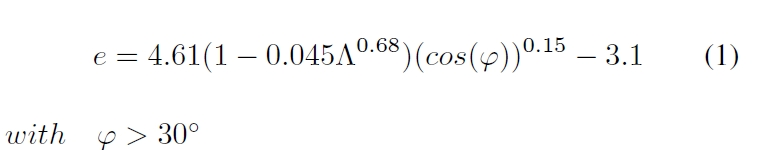
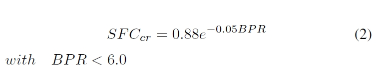
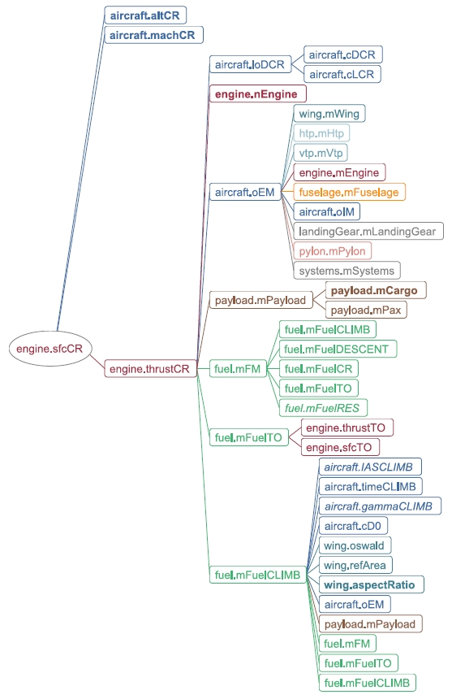

While the previous subsection elaborated on a technique to derive a description of higher granularity out of a conceptual design module, this subsection focuses on reusing the information generated by higher level tools. This data needs to be reassembled in order to be able to perform a synthesis of the design within the analysis process.
Two different approaches will be shown: the first being the replacement of the value for a single parameter by importing (or deriving) this value from CPACS. And the second approach where replacing the value of the parameter is not sufficient. If additional dependencies of the higher level information need to be resolved, a new calculation method needs to be introduced. In this case the calculation method is replaced during runtime of the code.
The influence of the Oswald factor on the global characteristics of an aircraft design is ineluctable. In the Equation below taken from Raymer [1] the Oswald factor (e) is determined from the aspect ratio and the leading edge sweep angle. In this case the calculation method is limited to leading edge sweep angles larger than 30deg.
For calculations in a design space that can not be accessed by this equation, a different method must be used. Physical models are preferred as limitations due to geometric parameters are avoided. Due to the possibility to export geometric information to CPACS as seen in the previous subsection, aerodynamic analysis modules can be used to derive performance maps. In the case of fast linear methods it is easy to derive the Oswald factor for the configuration. In this case more data is imported from CPACS as can be reflected by parameters and methods in VAMPzero. Contrary to an upward change in the dimensionality as in KBE, this operation is well-defined.
Less complex imports are possible if no change in the dimensionality occurs and parameters are modelled nonambiguously in the central model and the conceptual design module, e.g. for the design cruise Mach number. If the parameter is imported, its status is set to fix neglecting further calculations within VAMPzero. In this case the analysis capability is within the design environment and not available within the conceptual design code. If parameter variations occur, the analysis process needs to be triggered again to update the imported value.
Depending on the state of a model different calculation approaches need to be made for single parameters. For example, the aspect ratio can either be estimated from sizing requirements or calculated exactly if span and reference area are given in a model. As VAMPzero is capable of exchanging its calc methods during runtime, this capability can also be utilized for multi-fidelity aspects.
In object-oriented modelling, entities are described by classes uniting both the attributes and methods that describe an entity. Attributes hereby describe the state of the class, respectively the object at runtime. The behavior is represented by the implemented methods. As already mentioned, each class in VAMPzero holds a calc method. To adapt to the current state of the model the calc method of a parameter can be replaced by other methods. This procedure of exchanging a reference to an executable block of code without the owning object knowing is renowned as monkey-patching. Dynamic object-oriented programming languages like Python, Ruby or JavaScript support monkey-patching with their ability to handle functions (or references to executable blocks of code, known as closures) as objects. They are therefore able to replace them at runtime, which can be considered some kind of self-modification, since the method replacement was never written down in the source code. VAMPzero is coded in Python where all entities are declared as functions. Hence the monkey-patch can be coded easily, allowing the module to choose between various coded calc methods.
In the equation below a correlation for the thrust-specific fuel consumption in cruise condition depending on the bypass ratio is given by Raymer. The equation is valid for bypass ratios of up to 6.0. This limits the analysis to engine concepts that are not up-to-date. Furthermore, the thrust-specific fuel consumption is an important parameter for the design and hence a calculation method with dependencies in more parameters is desirable. This may help in evaluating influences from different technologies, as their impact is reflected in the respective parameters.
As mentioned in the previous section, it is possible to monitor dependencies in VAMPzero at runtime. An example for the equation above is given in Figure 9. Direct links exist between the mission fuel mass and the design range in the displayed configuration of VAMPzero. The current calc methods of these parameters rely on the the input from the thrust-specific fuel consumption. The only parameter on the right-hand side is the bypass ratio. In the described calc method there are no other influences on the SFC.
Fetching values from CPACS is done by cpacsImport methods in VAMPzero. In contrast to the parameter replacement described previously, if multi-dimensional links for a parameter exist in CPACS these need to be imported as well. Hence the calc method needs to be adjusted and the parameter’s status will be set to calc. The thrust-specific fuel consumption is given depending on the Mach number, flight altitude and required thrust in CPACS. The import method reads these values and stores them inside the parameter. Afterwards, the cpascImport method exchanges the calc method as shown in the equation above by calcCPACS that interpolates in the stored performance map. The figure below shows the new dependencies inside the model.
| [1] | Daniel Raymer, Aircraft Design: A Conceptual Appraoch, AIAA Educatioin Series, 1989 |
{kind=link}
{kind=link}
{kind=link}
{kind=link}